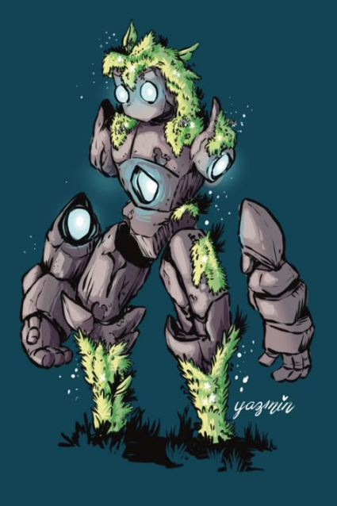
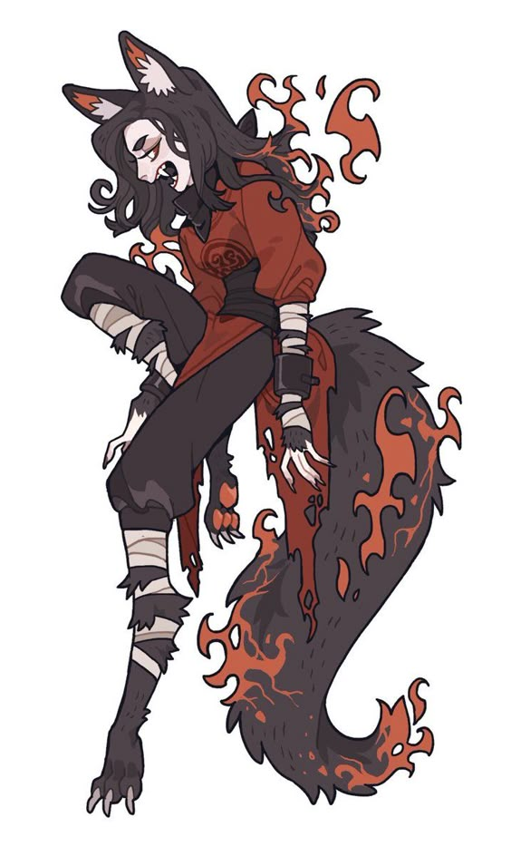
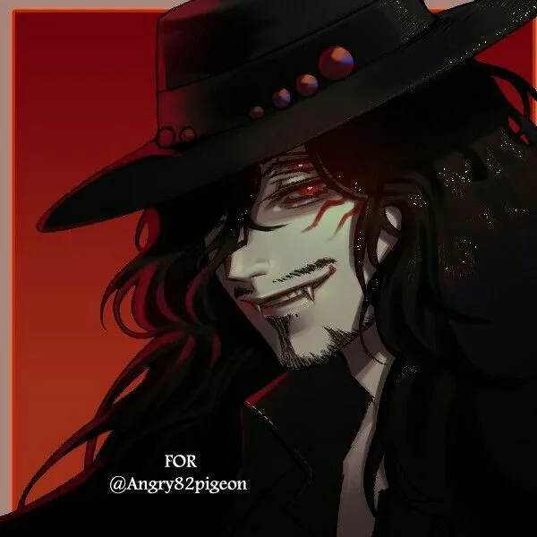
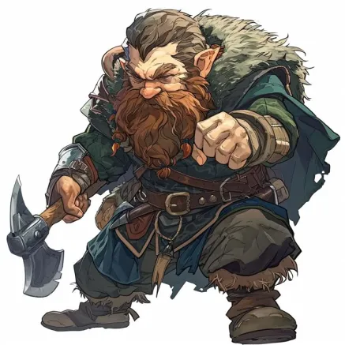
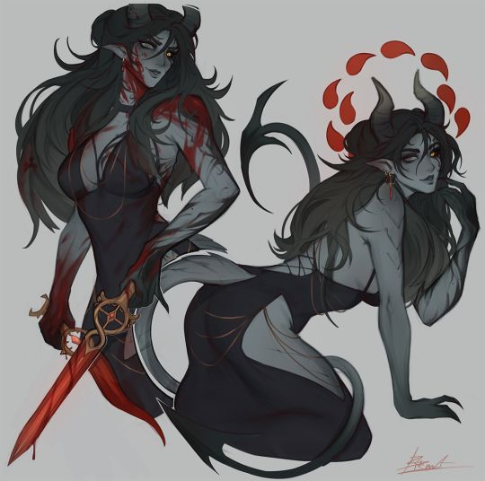

Escolhendo sua nova vida
Hora de escolher o que você vai querer ser em sua proxima vida! Escolha sua especie e sua classe, faça uma combinação fantastica.
Especie
Golens
Golens são feitos de pedra e mana. Não tendo de fato vida, a mana é o que faz eles existirem.
A pedra talmafilia absorve mana do ambiente ou de seres, plantas, animais que morrem próximo. Quando ela junta uma alta quantidade de mana, ela se espalha para rochas e outras coisas próximas, formando os golens ou talmaturgos (Conhecido mais em cidades de ferreiros).
Não pode ter classe magica.
Golens são raros, pessoas tiram seu núcleo pra vender.
Idade: Golens não se desenvolvem fisicamente, porem, assim que "nascem", já tem uma compreensão e capacidade aproximada a uma criança de 5 anos. Os golens não tem uma idade adulta exata e nem uma aproximada para sua morte. Eles morrem quando são destruídos, ou quando sua mana acaba
Deslocamento: Seu deslocamento é de 8 metros. Por ser feito de rochas, se torna mais pesado e consequentemente mais lento.
Habilidade: Pode absorver a mana de seres, plantas ou taques fracos. Assim se regenerando e ficando mais forte.
Desvantagem: Não podem utilizar classes magicas ou qualquer tipo de magia, pois ele não tem vida em seu corpo, apenas mana.
Fogo:
São imunes a fogo, a lava protege seu ponto vital
Terra:
São mais resistentes ao elemento terra, vinhas escondem o núcleoÁgua:
Imune a água, corais protegem o núcleo
Não tem elemento ar ou variantes.
Humanos
Humanos são seres bem comuns no mundo, de vida curta se comparado a outras raças. Humanos são seres muitos variados em sua etnia, crenças e ideais.
Idade: Os humanos chegam na idade adulta após a adolescência, em seus 18/19 anos, vivendo menos que um século.
Deslocamento: Seu deslocamento comumente é de 8 metros, podendo ser reduzido com o peso de uma armadura pesada.
Habilidade: Os humanos se adaptam e criam soluções para suas necessidades, quando a necesside mudar futuramente, eles criaram uma nova solução.
Desvantagem:Por conta de um castigo divino, os humanos foram almadiçõados e nascem com menos mana. (-10 de mana base)
Hibridos e Anibridos
Hibridos são especies misturadas com humano. Qualquer informação é debatida com o mestre e varia com suas escolhas.
Anibridos são animais com conciencia assim como humanos, porem em um corpo animal, com capacidade para aprender, fazer magia e falar e etc. Para as informações, funciona da mesma forma que o hibrido.
Vampiro
Idade: Quando o ser é transoformado em vampiro, ele permanecera com aquela aparencia pelo resto de sua existencia. Ele não ira envelhecer ou morrer de forma natural.
Caso você tenha nascido como vampiro, seu envelhecimento atrasa e se torna lento.
Deslocamento:Seu deslocamento comumente é de 8 metros, podendo ser reduzido com o peso de uma armadura pesada.
Habilidade: Vampiros podem beber sangue (principalmente humano) para se saciar e regenerar.
Desvantagem: Caso fique no sol você leva dano, sua pele fragil e fraca não aguenta a esse tipo de exposição.
Elfos
Idade: Elfos vivem por muito tempo, comumente eles chegam a maturidade aos 118 anos e vivem aproximadamente até os 600 anos.
Deslocamento:Seu deslocamento comumente é de 8 metros, podendo ser reduzido com o peso de uma armadura pesada.
Habilidade: Por conta de suas orelhas longas, elfos tem uma otima audição, conseguindo escutar em um raio de 10 metros.
Desvantagens: Elfos não podem usar ferro pois é considerado erege, alem de poder queimar levemente sua pele.
Anões
Idade: Anões vivem em torno de 300 anos. Chegam a sua maturidade entre os 50 e 55 anos.
Deslocamento:Seu deslocamento comumente é de 7 metros, podendo ser reduzido com o peso de uma armadura pesada.
Habilidade: Por conta de viver frequentemente em cavernas, acabou se adaptando ao escuro, conseguindo enxergar aonde a luz não bate.
Desvantagem: Por conta de sua adaptação ao escuro, seus olhos se tornaram mais sensiveis a luz do sol ou iluminações muito fortes.
Avatar
Idade: Sua vida media media é de 350 anos, já sua maturidade é aos 60
Deslocamento:Seu deslocamento é de 9 metros e armaduras pesadas não lhe afetam.
Habilidade: Avatarem possuem uma habilidade elemental simples dependendo de sua tribo.
Desvantagem:Armas pequenas como facas por exemplo, acambam mais atrapalhando do que ajudando, recebendo assim uma desvantagem.
